Як працювати в системі голові, казначею та електрику, і за якими правилами система рахує: тарифи, покази, нарахування, платежі, втрати, вода — з розібраними прикладами.
«Наділ» веде облік кооперативу: хто член, якими ділянками володіє, що й за якими тарифами нараховується, скільки електроенергії та води спожито. Платежі вносяться в касі й розподіляються на нарахування; далі з’являться рахунки й карта.
Кожна людина входить під власним обліковим записом. Що вона бачить і що може робити, визначають її ролі, а ролі складаються з дозволів (розділ 3). У кооперативі є три базові ролі:
| Роль | Що може |
|---|---|
| Голова | Усе: члени, ролі, ділянки, власники, тарифи, лічильники, покази, нарахування, платежі, імпорт, налаштування, журнал змін. Повноваження голови не можна зменшити, і в кооперативі завжди має бути хоча б один голова. |
| Казначей | Переглядає членів, ділянки, тарифи, лічильники, нарахування й журнал змін; вносить платежі, розділяє їх між ділянками, перерозподіляє й розподіляє аванс. Сторнувати платіж не може — це робить голова. |
| Член кооперативу | Лише власні дані: свої ділянки, їхні тарифи, нарахування й платежі, свої лічильники, передача показів. |
Голова може створювати власні ролі. Наприклад, роль «Електрик» має лише два дозволи: «Перегляд лічильників» і «Внесення показів». Людина з такою роллю бачить у меню тільки «Покази» та «Лічильники».
Поки що обліковий запис для входу (пошту й пароль) створює адміністратор системи. Самостійна реєстрація та запрошення поштою з’являться пізніше.
У шапці праворуч: перемикач мови УКР / ENG і теми Системна / Світла / Темна. Вибір запам’ятовується в цьому браузері. Інтерфейс завжди показує лише одну мову: якщо обрано українську, усе — назви, підказки, повідомлення — українською.
Ліворуч у шапці — назва вашого кооперативу, під нею меню розділів. На телефоні меню ховається за кнопкою «Меню».
Розділ «Члени кооперативу» — список усіх членів. Поле пошуку підказує, що воно розуміє.
+380 50 123 45 67, 0501234567, 380501234567), або точно його
останні 4 цифри.
Частина пошти (наприклад, лише те, що перед @) або цифри з середини телефону нічого не знаходять. Якщо члена не знайдено, спробуйте прізвище або останні 4 цифри телефону.
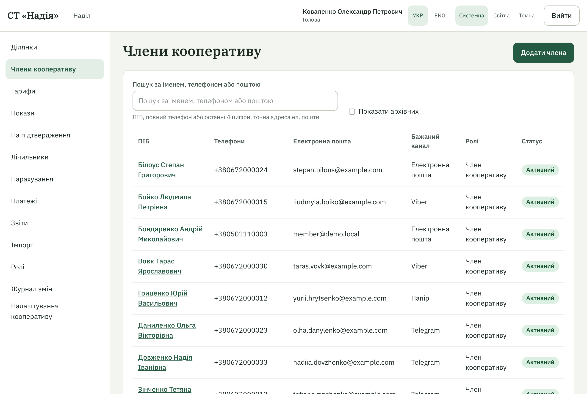
0XXXXXXXXX система сама перетворить на
+380XXXXXXXXX.
Примітки — для службової інформації про члена: як краще зв’язатися, домовленості, контакти родичів. Їх бачать лише люди з дозволом «Перегляд членів». Окремих полів для РНОКПП, паспортних даних і дат народження в системі немає — кооперативу для обліку вони не потрібні.
Телефони, електронна пошта, поштова адреса, Telegram, Viber і примітки зберігаються зашифрованими, тож копія бази їх не розкриє. Система розшифровує їх для тих, кому дозволено їх бачити, тому в щоденній роботі нічого не змінюється, окрім правил пошуку вище. Імена лишаються читабельними.
Картка показує контакти, ролі, ділянки у власності та примітки. Примітки бачать лише ті, хто має дозвіл «Перегляд членів».
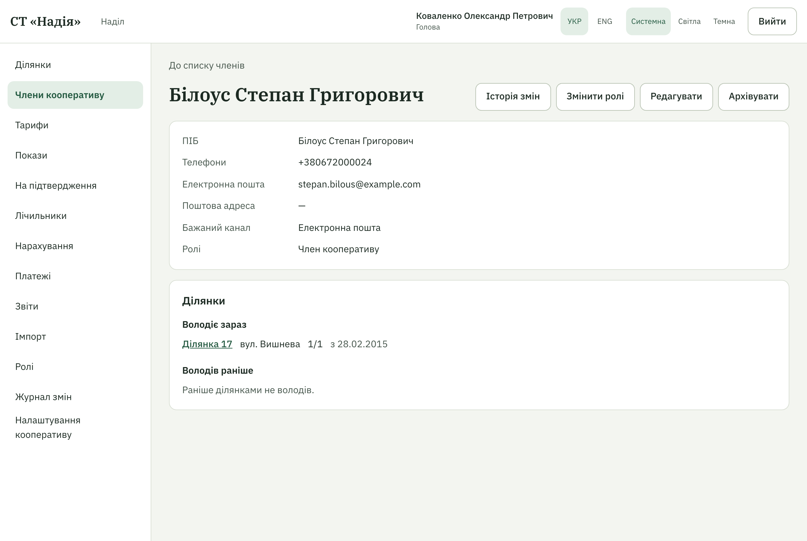
Члена не видаляють, а архівують: він зникає зі списку (його видно з позначкою «Показати архівні»), не може входити, але вся історія зберігається. «Відновити» повертає його. Архівувати власника ділянки не можна, доки ділянка не перейде іншому власнику, а останнього голову — доки не призначено іншого.
У розділі «Ролі» голова (або хтось із дозволом «Керування ролями») налаштовує, хто що може.
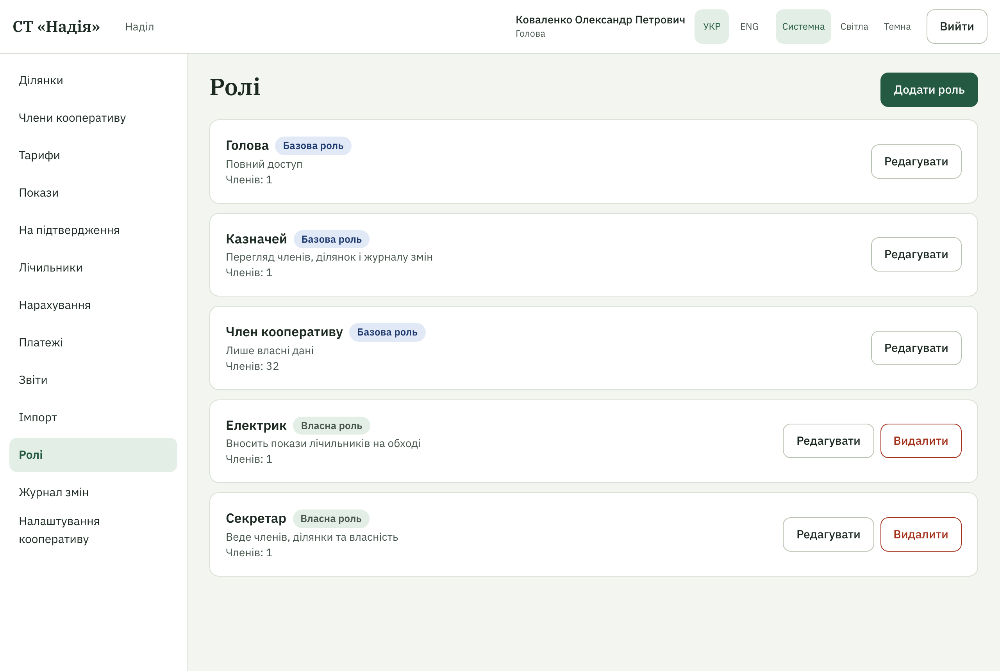
| Дозвіл | Що дає |
|---|---|
| Перегляд / редагування членів | Бачити всіх членів і їхні контакти; додавати, змінювати, архівувати |
| Керування ролями | Створювати ролі, змінювати дозволи, призначати ролі |
| Перегляд / редагування ділянок | Бачити всі ділянки з подробицями; додавати, змінювати, архівувати |
| Редагування власності | Додавати, змінювати й виправляти власників |
| Запуск імпорту | Завантажувати дані з Excel |
| Керування налаштуваннями | Змінювати налаштування кооперативу |
| Перегляд / керування тарифами | Бачити тарифи; створювати види нарахувань, тарифи та версії |
| Перегляд / керування лічильниками | Бачити реєстр і дерево; реєструвати, замінювати, знімати лічильники |
| Внесення показів | Вносити, виправляти й видаляти покази (обхід електрика) |
| Підтвердження показів | Підтверджувати або відхиляти покази, які передали члени |
| Перегляд журналу змін | Читати журнал змін |
| Перегляд звітів | Відкривати й завантажувати звіти, формувати файли за шаблонами (звіт «Боржники» ще й за «Перегляд членів») |
| Керування шаблонами звітів | Завантажувати, замінювати, скачувати й архівувати шаблони звітів |
| Перегляд платежів | Бачити платежі, їхній розподіл і звіт «Платежі» |
| Внесення платежів | Вносити готівкові й банківські платежі, розділяти їх між ділянками, перерозподіляти, розподіляти аванс |
| Сторнування платежів | Сторнувати платіж із причиною (за замовчуванням лише голова) |
Розділ «Ділянки» — реєстр усіх ділянок кооперативу з пошуком за номером, вулицею або кадастровим номером і фільтрами за видом і статусом.
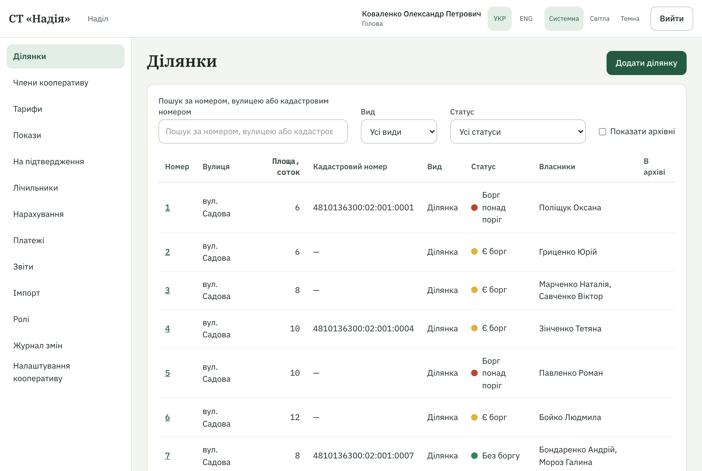
12, 12а, R-1.
Сортування природне: 2 перед 10, 12а після 12.
NNNNNNNNNN:NN:NNN:NNNN.| Колір | Значення |
|---|---|
| Зелений | Без боргу (також коли є аванс) |
| Жовтий | Є борг |
| Червоний | Борг понад поріг (суму або строк задає голова) |
| Сірий | Ділянка без власника або спільні землі |
Колір рахується від боргу після платежів: оплачене нарахування боргом не вважається (розділи 18 і 23).
На картці — усі дані ділянки, власники з історією, тарифи на обраний місяць, лічильники.
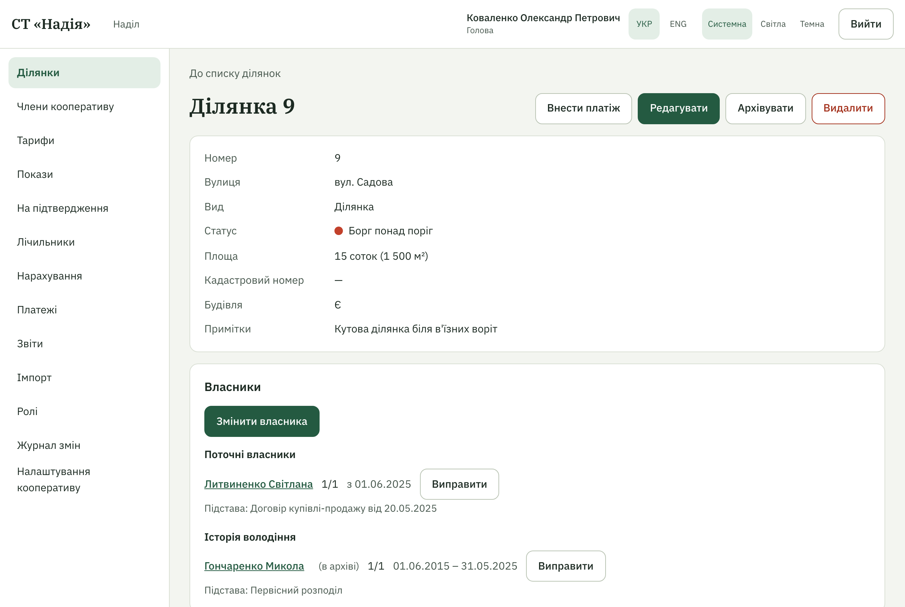
«Архівувати» ховає ділянку зі списку, але зберігає історію. Видалити можна лише ділянку, створену помилково, яка ніколи не мала власника. Ділянку з безстроковим підключенням води (або з активним лічильником) не можна архівувати чи перетворити на спільні землі: система відмовить і попросить спершу завершити підключення на картці ділянки.
Власники ведуться на картці ділянки. Ділянка може мати кількох співвласників із частками
(1/2, 1/3); частки завжди в сумі дають одиницю. Один член може володіти
кількома ділянками — у кожної свій облік.
Попередні власники залишаються в історії до дня перед датою переходу. Борг належить ділянці, а не людині: після продажу він лишається на ділянці.
Якщо в записі помилка (не та частка, дата чи людина), натисніть «Виправити» біля запису. Старі значення зберігаються в журналі змін. Записи про володіння ніколи не видаляються.
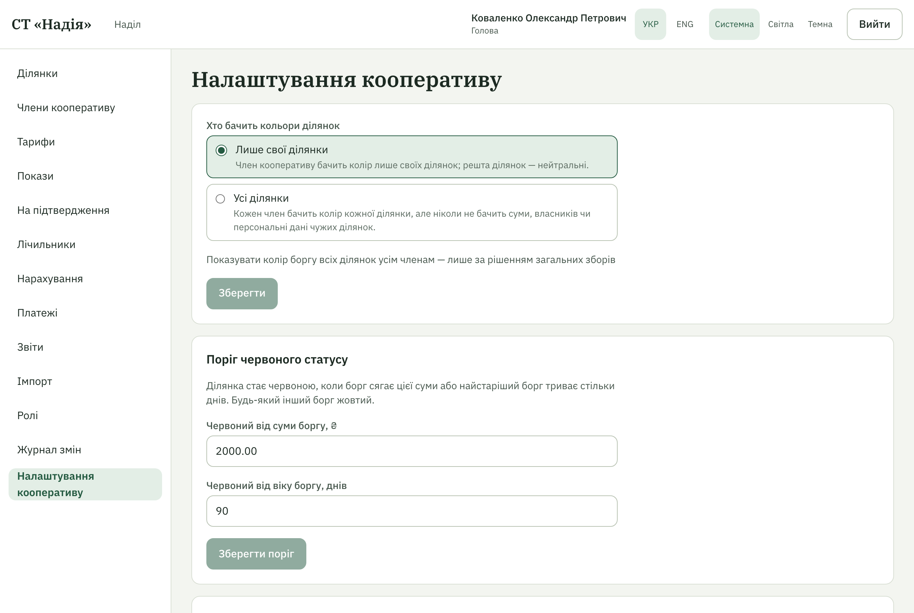
Сусіди знають, чия ділянка, тож колір фактично показує боржника. Вмикайте «Усі ділянки» лише за рішенням загальних зборів. Зміна записується в журнал змін.
Перемикач «Автоматично зараховувати аванс» (типово ввімкнено; змінює той, хто має «Керування налаштуваннями», решта бачить його лише для читання) вирішує, чи йде аванс ділянки на нові нарахування сам. Докладніше — у розділі 13.
Звідси ж відкривається «Дерево лічильників» — див. розділ 9.
Нижче вибору кольорів: поріг червоного статусу, як нараховуються втрати, розподіл спільних споживачів і водопостачання ділянок. Їх описано в розділах 18–20.
Блок «Реквізити»: повна назва, юридична адреса, банк, IBAN; код ЄДРПОУ лише читається. Їх використовують шаблони звітів — див. розділ 22.
Щоб не вводити кооператив вручну, ділянки, членів, власників і лічильники можна завантажити одним файлом Excel.
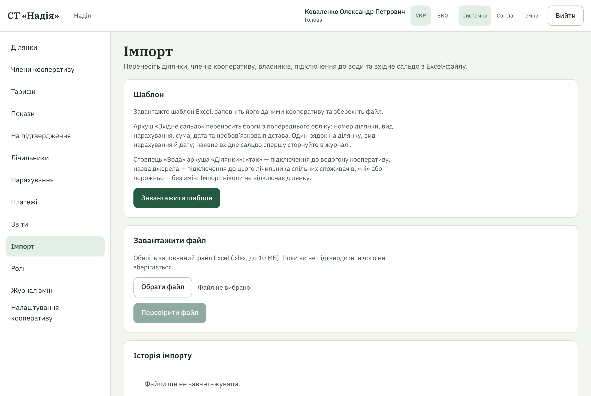
ДД.ММ.РРРР, площа — в сотках або м²,
частки — як 1/2.
.xlsx до 10 МБ, до 2 000 ділянок і 3 000 членів. Перевірка діє 30
хвилин.
Два доповнення: аркуш «Вхідне сальдо» (ділянка, вид нарахування, сума, дата, підстава; один рядок на ділянку й вид; суми не більш як з двома знаками) і колонка «Вода» аркуша ділянок («так» підключає до водопроводу кооперативу, інший текст називає свердловину; «ні» чи порожньо нічого не змінює). Повторний імпорт того самого файлу нічого не проводить удруге.
Тут голова описує, за що й скільки кооператив нараховує. Самі нарахування з’являться пізніше (розділ 18), але вже зараз на картці кожної ділянки видно, скільки їй нараховуватиметься.
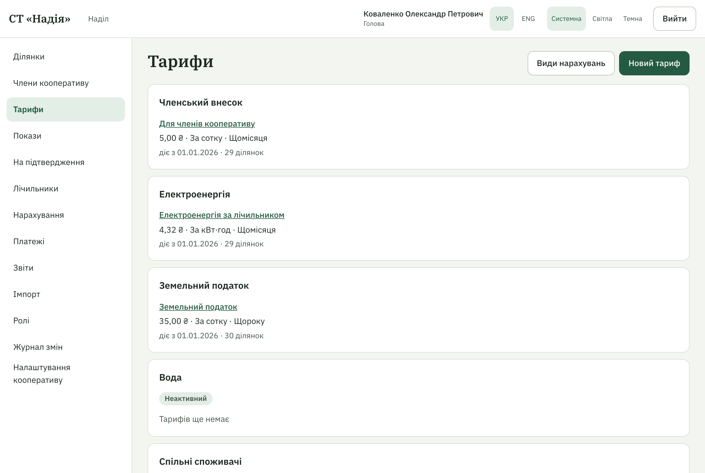
Кнопка «Види нарахувань». У кооперативі вже є: членський внесок, електроенергія, земельний податок, вода (неактивна, доки немає водомірів). Можна додати свої, наприклад «Ремонт дороги», перейменувати, змінити порядок, архівувати.
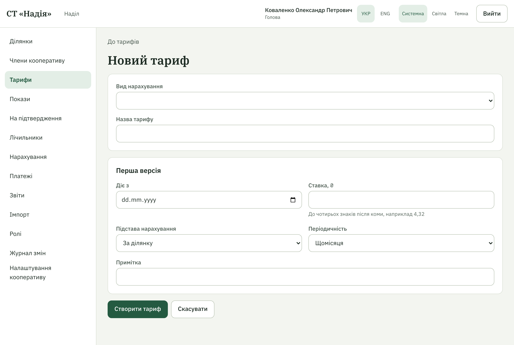
| Підстава нарахування | Приклад |
|---|---|
| За ділянку | 300 ₴ за ділянку на квартал |
| За сотку | Членський внесок 50 ₴ за сотку на рік |
| За кВт·год | Електроенергія 4,32 ₴ за кВт·год — за показами лічильника |
| За м³ | Вода — за показами водоміра |
| Фіксована разова сума | Цільовий внесок 1 200 ₴ із датою сплати |
Періодичність: щомісяця, щокварталу, щороку або одноразово. Кооператив нараховує щомісяця, тож річний тариф ділиться на 12, квартальний — на 3.
Членський внесок 50 ₴ за сотку на рік, ділянка 6 соток: 50 × 6 / 12 = 25,00 ₴ на місяць.
Ставка може мати до чотирьох знаків після коми (наприклад, 1,4532 ₴ за м² для земельного податку) — сума до копійок округлюється лише в кінці. На екрані ставка показується без зайвих нулів: 50,00 ₴, а не 50,0000 ₴.
Тариф змінюється не правкою, а новою версією з датою, з якої вона діє («Нова версія»). Історія версій видно на картці тарифу. Якщо нова версія діє з минулої дати, система попередить, що минулі нарахування буде перераховано.
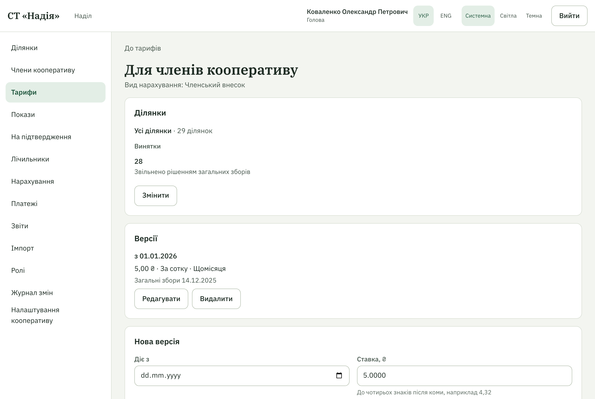
Помилку у версії можна виправити («Редагувати») або видалити версію, поки за нею немає нарахувань. Єдину версію тарифу видалити не можна — архівуйте тариф.
Розділ «Лічильники» — реєстр усіх лічильників кооперативу. Біля кожного — значок ресурсу: блискавка для електроенергії, крапля для води.
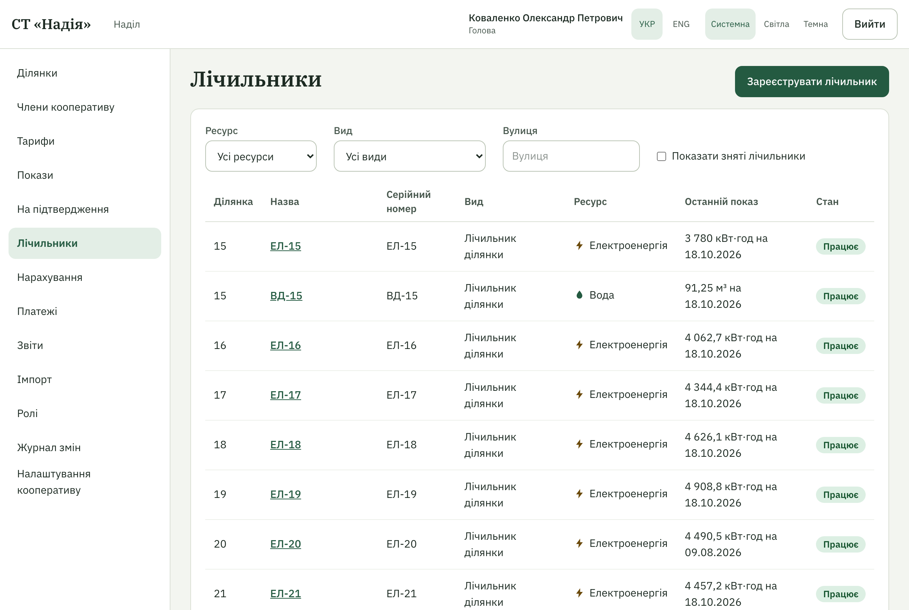
Підстанцій, квартальних лічильників і свердловин у кооперативі може бути скільки завгодно — система не обмежує їхню кількість.
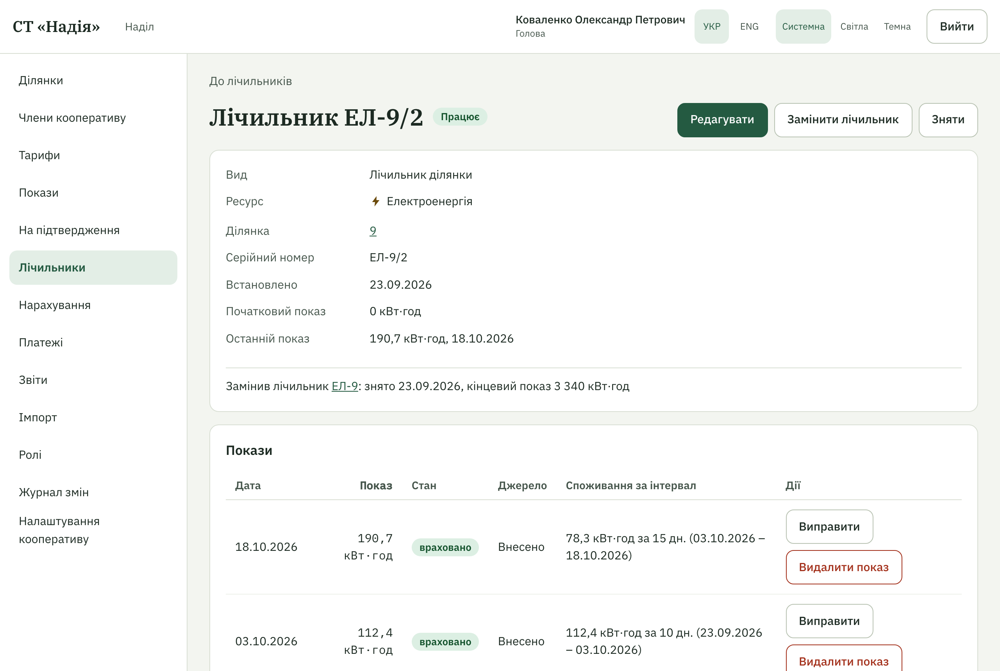
«Налаштування кооперативу» → «Дерево лічильників». Голова будує дерево: підстанції, під ними квартальні лічильники, спільні споживачі та лічильники ділянок. Кнопка «Перемістити» переносить лічильник під інший вузол з указаної дати — минулі періоди рахуються за старим деревом.
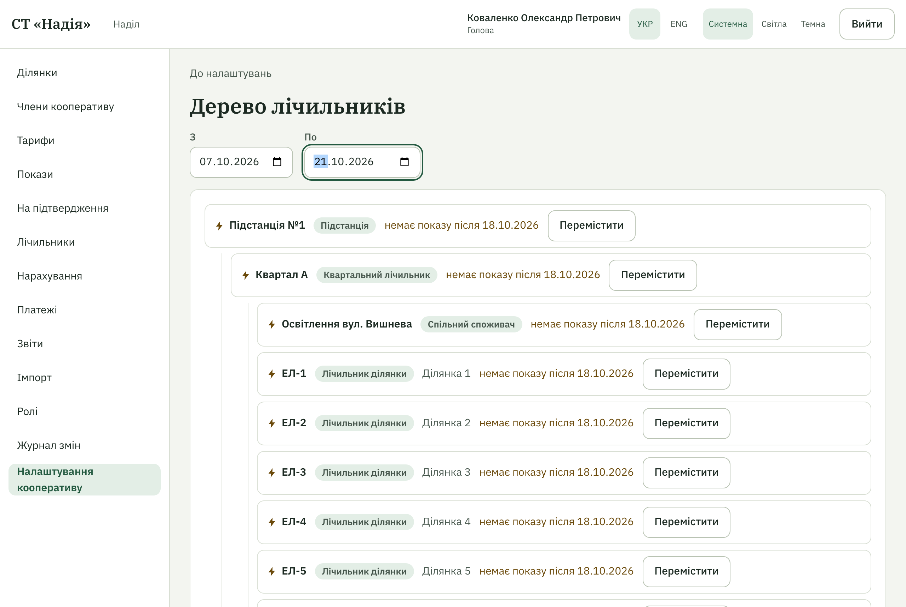
Оберіть період «з … по …», і біля кожного лічильника з’явиться споживання за цей період. Якщо на межі періоду показу немає, система розраховує значення пропорційно дням між сусідніми показами й позначає його «розрахунковий». Якщо після кінця періоду показу ще немає — «немає показу після …».
Покази не прив’язані до місяців: електрик може прийти через місяць, через три або через кілька днів. Показ — це значення лічильника на дату. Споживання рахується між сусідніми показами.
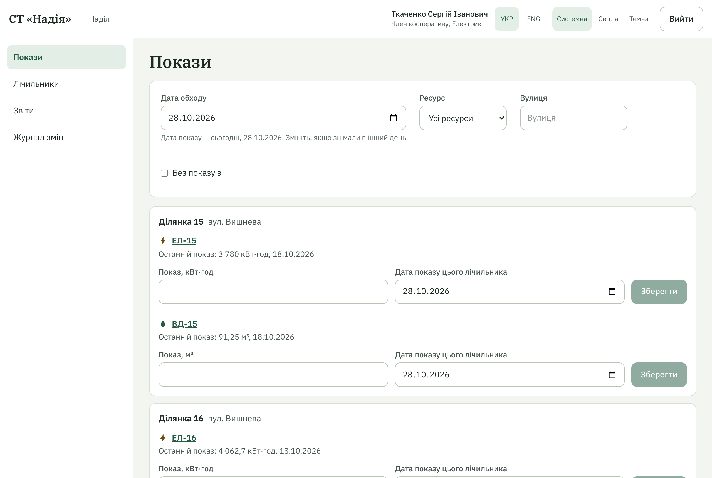
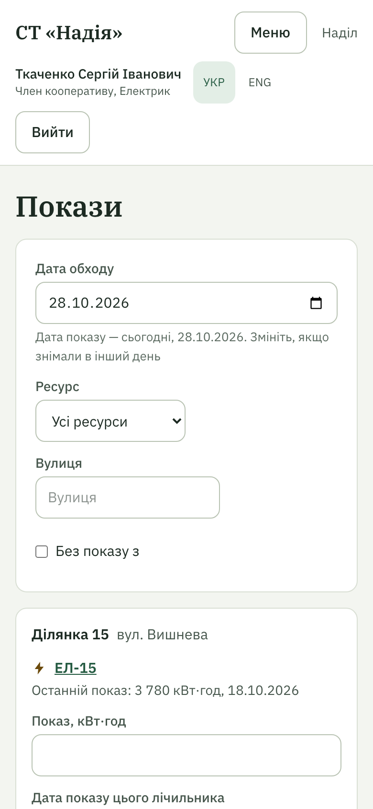
Член кооперативу може сам передати показ свого лічильника з кабінету. Такий показ чекає в розділі «На підтвердження»: «Підтвердити» або «Відхилити» з причиною, яку власник побачить. Непідтверджений показ у розрахунках не використовується.
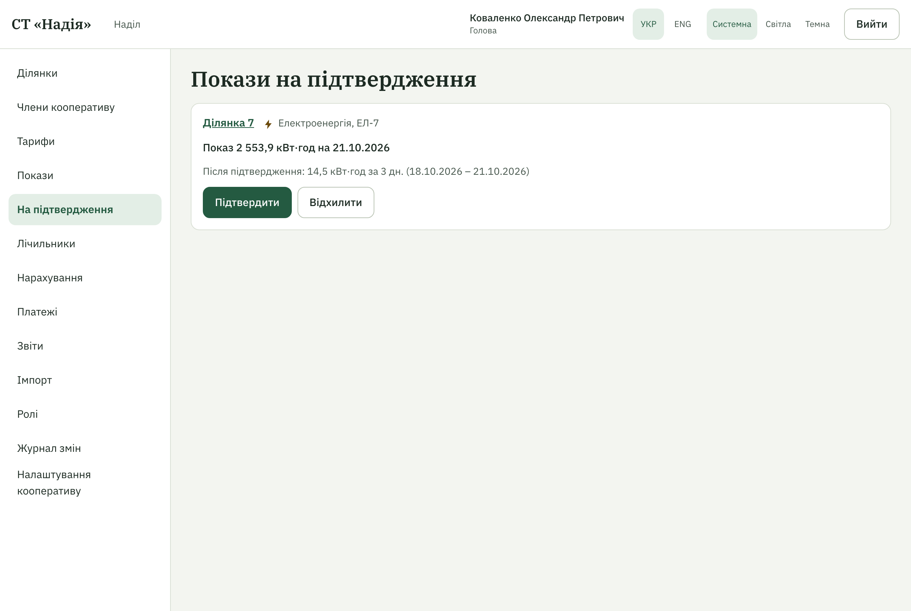
На картці лічильника кожен показ можна «Виправити» або «Видалити», поки за ним немає нарахування. Після нарахувань виправлення проходитиме через перерахунок (розділ 21).
Кожна дія правління записується: хто, коли, що змінив — зі старими й новими значеннями. Показано лише поля, які справді змінилися; зміна дозволів ролі показує додані («+») і прибрані («−») дозволи. Фільтри за людиною, дією, об’єктом і датою.
Старі й нові значення телефонів, пошти, адреси, Telegram, Viber і приміток члена бачить лише той, кому дозволено також переглядати членів. Решта, кому дозволено читати журнал, бачить, що поле змінилося, а замість значень — слово «приховано». Інші поля, наприклад ім’я, показано як завжди.
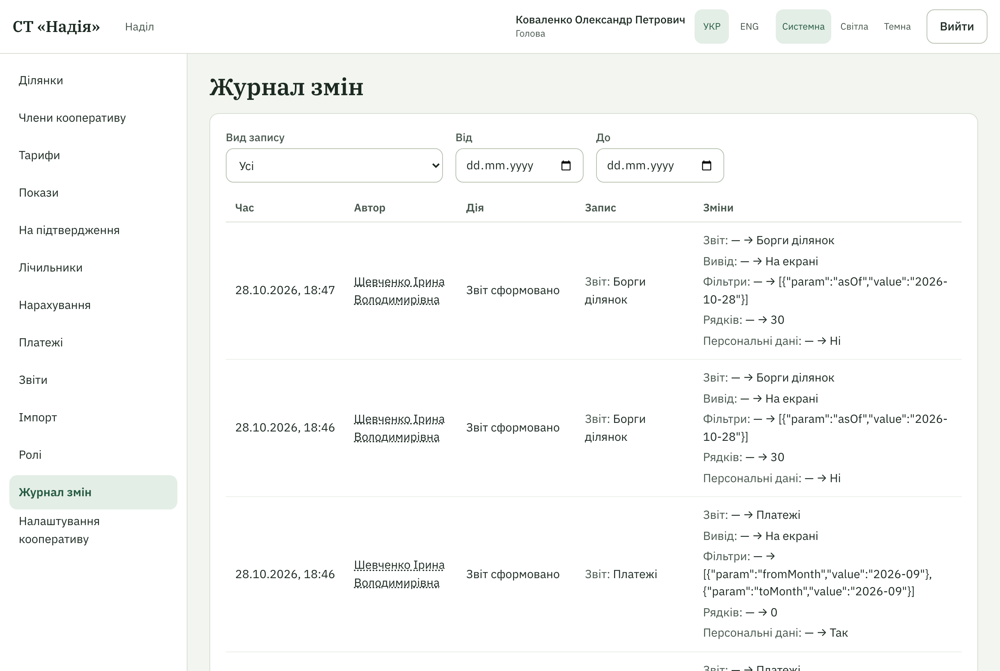
Записи журналу не змінюються й не видаляються. Дані, внесені скриптами демонстрації, у журналі не відображаються — лише дії людей у системі.
Член кооперативу після входу бачить «Мій кабінет»: свої ділянки, що йому нараховуватимуть за тарифами, свої лічильники з історією показів і кнопку «Передати показ». Платежі своїх ділянок — у «Моїх нарахуваннях».
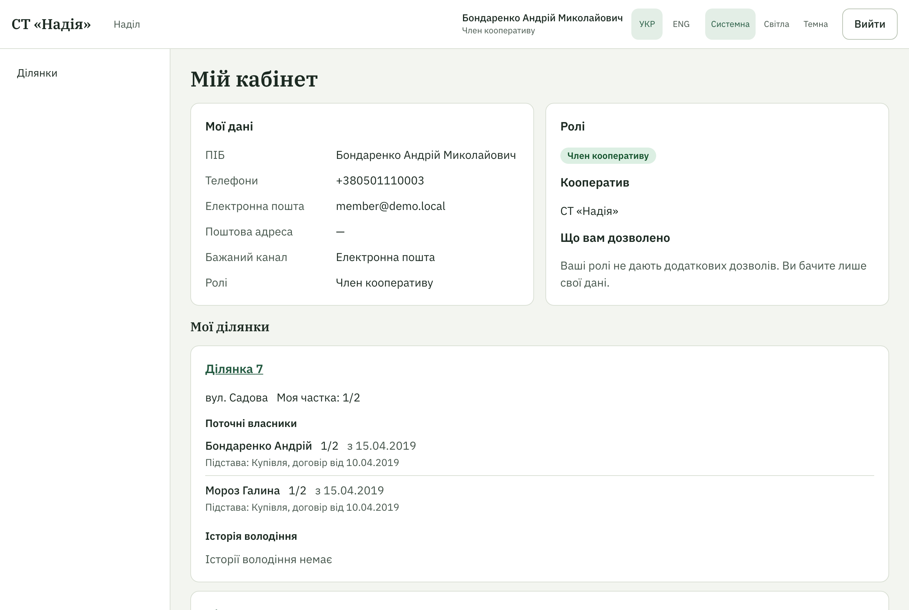
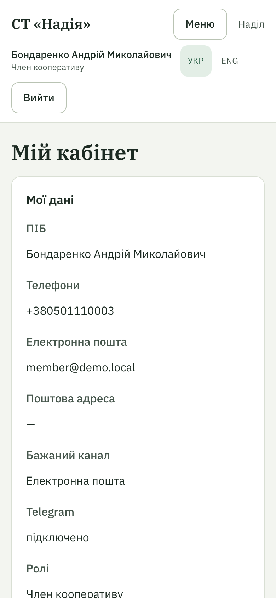
Чужих ділянок, сум, власників і персональних даних член кооперативу не бачить. Кольори інших ділянок — лише якщо голова ввімкнув «Усі ділянки» (розділ 6).
Для кожної своєї ділянки член бачить борг за видами та кожне нарахування з розрахунком, лише для читання. Див. розділ 18. Там само — платежі цієї ділянки: дата, номер квитанції або банківського документа, сума й що саме вона сплатила, сторновані платежі з позначкою, аванс і борг після платежів. Хто вніс платіж і примітку про платника член не бачить, платежів чужих ділянок — теж.
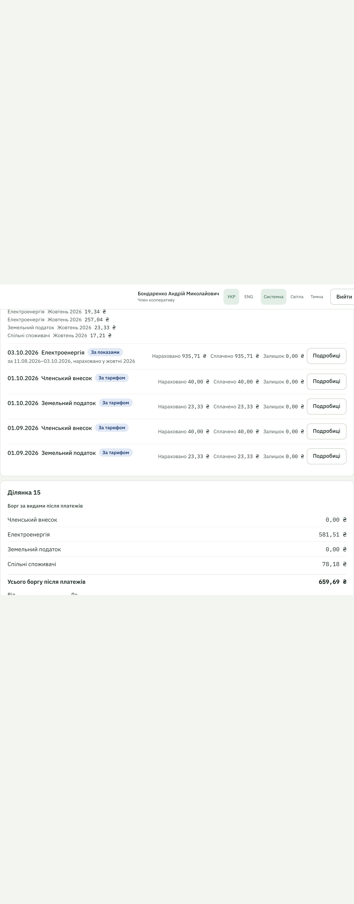
Казначей вносить гроші, які отримав — готівкою в касі кооперативу або банківським переказом, — а система розподіляє їх на борги ділянки. Після цього борг, колір ділянки й звіти враховують платежі. Меню «Платежі» бачать ті, хто має «Перегляд платежів»; вносять платежі ті, хто має «Внесення платежів» (голова й казначей); сторнує — лише голова.
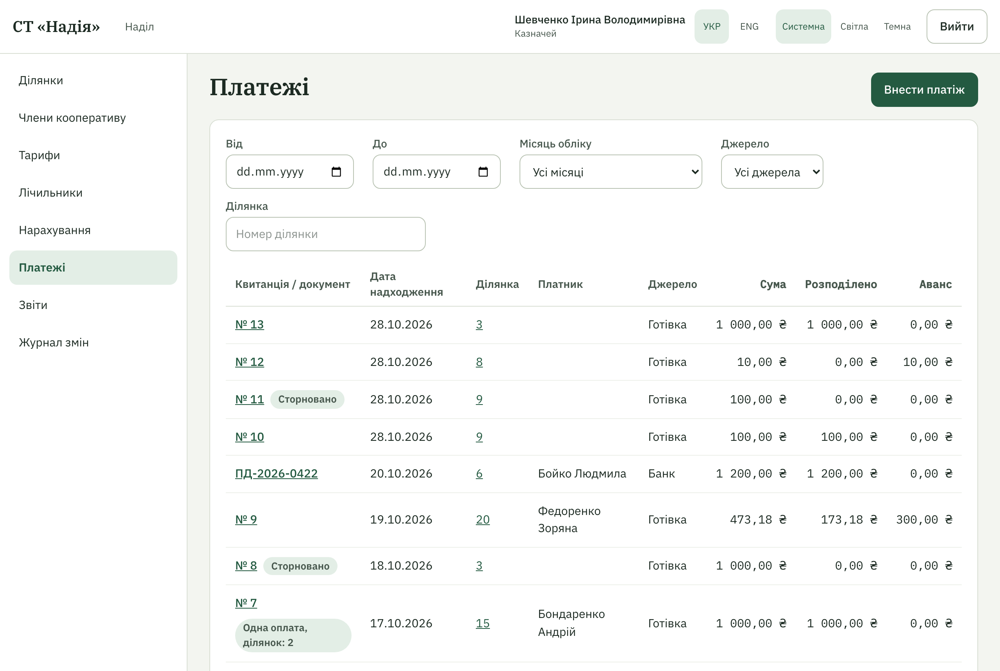
У списку платежі йдуть від нових до старих: номер квитанції або банківського документа, дата надходження, ділянка, платник, джерело, сума, скільки розподілено й скільки лишилося авансом. Фільтри: «Від», «До», «Джерело», «Ділянка», «Місяць обліку». Сторновані платежі лишаються в списку з позначкою «Сторновано».
Натисніть «Внести платіж» у списку «Платежі» або на картці ділянки (тоді ділянку вже вибрано).
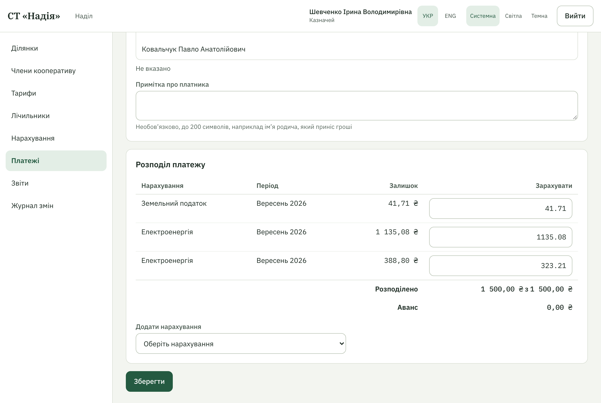
| Поле | Що вказати |
|---|---|
| Ділянка | Номер ділянки. Спільна земля й ділянка в архіві платежів не приймають |
| Джерело | «Готівка» або «Банк» |
| Дата надходження | Сьогодні за замовчуванням. Інша дата дозволена, але з попередженням «Дата відрізняється від сьогоднішньої»; майбутня — ні |
| Сума | Більша за нуль, не більше двох знаків після коми |
| Платник | Необов’язково: власники ділянки першими, далі будь-який член кооперативу |
| Примітка про платника | Необов’язково, до 200 символів, наприклад ім’я родича, який приніс гроші. Це персональні дані, тому примітка зберігається зашифрованою, а бачить її лише той, хто має ще й «Перегляд членів» |
| Номер банківського документа | Лише для банку, необов’язково, до 64 символів |
Щойно відомі ділянка й сума, форма показує пропозицію: таблицю несплачених нарахувань ділянки (нарахування, період, залишок, «Зарахувати») і рядок «Аванс» — що лишилося понад борги. Система спершу гасить найстаріший борг; якщо борги за один день, — у порядку видів нарахувань кооперативу. Приклади — у розділі 23.
«Зберегти» записує платіж. Для готівки екран показує «Квитанція № 42» великим шрифтом і кнопку «Ще один платіж»; для банку — збережений платіж. Номери квитанцій наскрізні для кооператива: без пропусків і повторів, навіть коли двоє казначеїв вносять готівку одночасно; номер ніколи не змінюється й не використовується вдруге. Це внутрішня квитанція, а не фіскальний чек; друкований прибутковий касовий ордер з’явиться пізніше.
Якщо гроші надійшли 31 січня, а вносите ви 3 лютого, і січень уже закрито, платіж зберігає дату 31.01, але враховується в лютому; підсумки січня не змінюються.
Якщо член кооперативу приніс одну суму за кілька своїх ділянок, оберіть у формі «Кілька ділянок одного платника», вкажіть платника й суму. Форма покаже його поточні ділянки з боргами й запропонує частини пропорційно боргам. Копійки, що не поділилися, отримують ділянки з найбільшими залишками (за рівності — та, що вище в списку); сума більша за весь борг іде надлишком на першу ділянку як аванс. Приклади — у розділі 23.
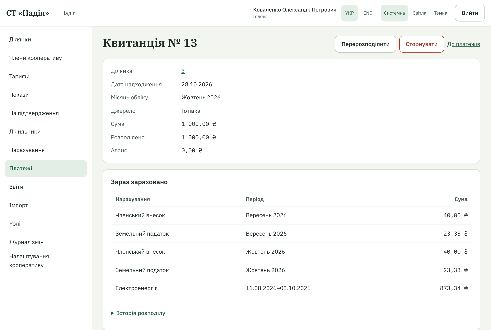
Картка показує дані платежу, примітку про платника (лише тим, хто має «Перегляд членів»), інші частини групи, хто й коли вніс платіж. Розподіл поділено на дві частини: «Зараз зараховано» — на що платіж зараховано тепер, і «Історія розподілу» — кожен розподіл і кожне повернення з нарахування (коли гроші зняли з нарахування) з періодом, сумою, причиною, автором і часом. Якщо автозарахування вимкнено, є аванс і відкрите нарахування, на картці є й кнопка «Розподілити аванс».
«Перерозподілити» (дозвіл «Внесення платежів») показує поточний розподіл поруч із новою пропозицією, яку можна змінити так само, як під час внесення. Збереження знімає старий розподіл і записує новий одним кроком; це записується в журнал змін. Так гроші переносять між нарахуваннями. Вікно не «зависає» на старому перегляді: таблиця лишається, біля неправильних рядків є повідомлення, унизу — «Розподілено X з Y». Коли автозарахування ввімкнено, рядки, що лишилися з 0,00, не створюють авансу, поки в ділянки є відкриті борги: вільна сума йде на найстаріші борги.
«Сторнувати» бачить лише голова. Потрібна причина (до 500 символів, наприклад «Помилкова ділянка»): без неї — «Вкажіть причину». Система знімає весь розподіл платежу, і оплачені ним нарахування знову боргові; сам запис платежу не видаляється. Платіж сторнується один раз («Платіж уже сторновано»); частина групи сторнується окремо, решта лишаються. Скасований готівковий платіж зберігає номер квитанції й показується як «Сторновано». Казначей, який помилився, просить голову — так само, як із нарахуваннями. Платіж ділянки, що вже в архіві, сторнувати можна.
Аванс ділянки — гроші, внесені за ділянку, але не зараховані на жодне нарахування. Він не буває від’ємним.
Увімкнення перемикача не зараховує старий аванс одразу — він піде на наступні нарахування ділянки.
На рахунку ділянки платежі йдуть вперемішку з нарахуваннями за датою; біля кожного нарахування — «Нараховано», «Сплачено», «Залишок». Над списком — борг після платежів за видами й загалом, а поруч із загальним боргом — «Аванс X ₴», коли аванс більший за 0,00. Фільтр «Лише платежі» лишає в списку тільки платежі та їхні сторнування; борги над списком не змінюються.
У «Нарахуваннях → Місяці» біля «Нараховано» з’явилася колонка «Надійшло». Звіти «Баланс ділянок», «Боржники» й «Нарахування за місяцями» враховують платежі; новий звіт «Платежі» показує кожен платіж із підсумками за джерелом (розділ 22).
У «Мої нарахування» член бачить платежі лише своїх ділянок — дату, номер квитанції або банківського документа, суму, що вона сплатила, сторновані платежі з позначкою, аванс і борг після платежів. Хто вніс платіж і примітку про платника він не бачить, чужих ділянок — теж. Електрик платежів не бачить.
Правила, за якими система рахує суми, і чому вони саме такі — з розібраними прикладами. Розділи з позначкою «планується» описують наступні можливості так, як їх уже вирішено зробити.
Ставка 0,05 ₴ на 15 + 15 днів 30-денного місяця: точна сума 0,05 ₴. Якщо округлювати кожну половину окремо, вийде 0,03 + 0,03 = 0,06 ₴ — на копійку більше. На тисячі ділянок і місяців такі копійки складаються в помітні суми.
Вид нарахування (членський внесок, електроенергія, земельний податок, вода, цільові внески) має один або кілька тарифів. Тариф має версії: кожна діє з дати до дня перед наступною версією. Дві версії не можуть починатися в один день.
одиниці за ділянку → 1 · за сотку → площа м² / 100 частка періоду щомісяця 1 · щокварталу 1/3 · щороку 1/12 сума за місяць ставка × одиниці × частка періоду × (дні дії версії в місяці) / (дні місяця) разова сума уся ставка — у місяці дати сплати, в інші місяці 0,00
| Випадок | Дано | Результат |
|---|---|---|
| Членський внесок | 50 ₴/сотка/рік, ділянка 600 м² | 50 × 6 / 12 = 25,00 |
| Нерівна площа | 50 ₴/сотка/рік, 612 м² | 50 × 6,12 / 12 = 25,50 |
| Округлення в кінці | 33,3333 ₴/сотка/рік, 700 м² | 19,444425 → 19,44 |
| Щокварталу за ділянку | 300 ₴ на квартал | 100,00 на місяць |
| Зміна версії посеред місяця | 50 ₴ до 15-го, 60 ₴ з 16-го, 600 м², 30 днів | 12,50 + 15,00 = 27,50 |
| Цільовий внесок | 1 200 ₴, сплата 01.05.2026 | 1 200,00 у травні, 0,00 в інші місяці |
| Земельний податок | 35 ₴/сотка/рік, 600 м² | 17,50 на місяць |
Версію можна виправити чи видалити, поки за нею немає жодного нарахування. Після цього виправлення йде через перерахунок (розділ 21): нарахування, вже виставлені людям, не змінюються «тихо».
Лічильник вимірює один ресурс: електроенергію (кВт·год) або воду (м³). Значення лічильника — не гроші: до трьох знаків після коми.
Заміна — одна дія: кінцевий показ старого, серійний номер і початковий показ нового. Споживання періоду із заміною — сума по обох лічильниках.
Старий лічильник: 8 140 на початку, знятий на 8 205. Новий: встановлений з показом 3, на кінець періоду 69. Споживання: (8 205 − 8 140) + (69 − 3) = 65 + 66 = 131 кВт·год.
Прокрутка через нуль (99 999 → 00 012) — це «заміна лічильника самим собою»: той самий серійний номер, кінцевий 99 999, початковий 0. Тоді спрацьовує те саме правило.
Показ — це значення лічильника на дату, а не «показ за місяць». Електрик приходить, коли може: через кілька днів або через кілька місяців. Дату вводить людина; за замовчуванням — сьогодні, з ненав’язливою підказкою.
| Статус | Що означає | Враховується |
|---|---|---|
| Враховано | Вніс електрик чи правління, імпорт, або підтверджений показ члена | так |
| Очікує | Передав член кооперативу, чекає підтвердження | ні |
| Відхилено | З причиною, яку бачить власник | ні |
| Замінено | Новий показ за ту саму дату або виправлення; лишається в історії | ні |
Між 01.03 (1 000) і 01.04 (1 310) — 31 день і 310 кВт·год. 16.03 — 15-й день: 1 000 + 310 × 15 / 31 = 1 150. Розраховані значення завжди позначені, щоб ніхто не прийняв їх за справжній показ.
Нарахування — запис у рахунку ділянки: вид нарахування, сума, місяць, за які дні (період надання послуги) і як отримано суму (ставки, одиниці, кВт·год, використані покази й версії тарифів).
| Джерело | Як виникає |
|---|---|
| Постійні тарифи | Правління натискає «Нарахувати місяць»: попередній перегляд → «Провести». Повторний запуск додає лише відсутнє, не дублює. |
| Електроенергія | Кожен підтверджений показ одразу дає нарахування за інтервал від попереднього показу. |
| Втрати в мережі | Залежно від налаштування голови — відсоток до кожного нарахування за світло або запуск правління за період (розділ 19). |
| Спільні споживачі | Окремий запуск правління за період, окремий рядок у рахунку (розділ 19). |
| Вхідне сальдо | Борг ділянки на день старту роботи в системі — вручну або аркушем Excel. |
Дні інтервалу — від дня після попереднього показу до дня нового включно. Якщо тариф змінився всередині інтервалу, кВт·год діляться за днями, кожна частина множиться на свою ставку, сума округлюється один раз.
Покази 112,4 (22.09) і 205,7 (04.10): 93,3 кВт·год × 4,32 = 403,06 ₴ за 23.09–04.10 (12 днів).
Покази 1 000 (01.10) і 1 300 (31.10), тариф 4,32 до 16.10 і 5,00 з 17.10: по 15 днів, 150 × 4,32 + 150 × 5,00 = 648,00 + 750,00 = 1 398,00 ₴.
Заміна лічильника дає два нарахування: 65 кВт·год = 280,80 і 66 кВт·год = 285,12.
залишок нарахування = нарахування з коригуваннями (сторновано — 0,00) − Σ розподілено на нього борг за видом нарахування = Σ залишків нарахувань цього виду борг ділянки = Σ боргів за видами аванс = Σ платежів (за вирахуванням сторнованих) − Σ розподілених
Платіж гасить конкретні нарахування, тому борг — це те, що ще не оплачено. Як розподіляється платіж і що буває, коли нарахування сторнують — у розділі 23.
Пункт меню «Нарахування» (дозвіл «Перегляд нарахувань») має чотири вкладки: Місяці, Не нараховано, Втрати та Спільні споживачі.
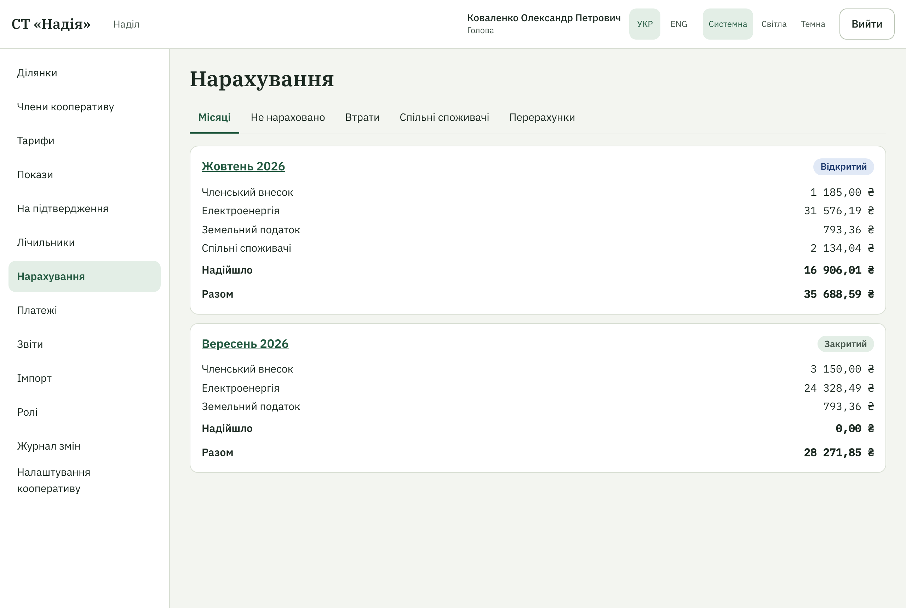
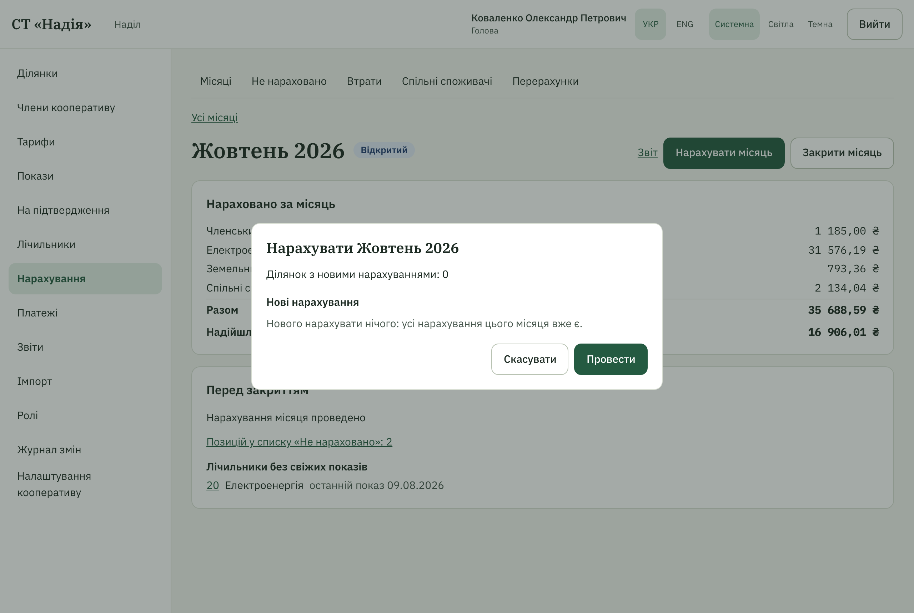
Один список усього, що система не змогла нарахувати, з причиною та посиланням на виправлення: немає тарифу на всі дні, два тарифи в один день, ділянка поза всіма тарифами, невідоме значення вузла чи споживача. «Повторити» пробує один запис ще раз; наступне нарахування місяця повторює записи тарифів і показів. Запис зникає, коли повтор вдався. Записи ніколи не блокують закриття місяця.
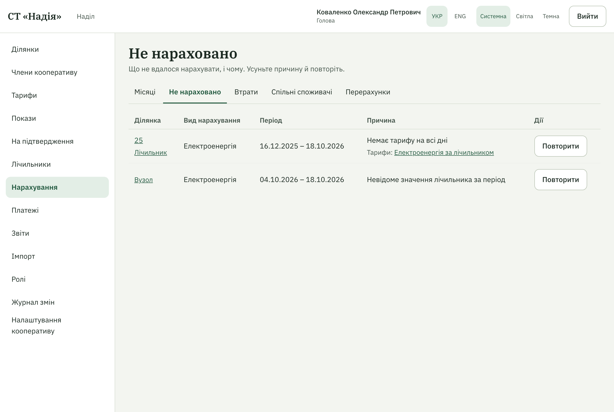
«Закрити місяць» (дозвіл «Закриття періодів») ще раз показує перелік і просить підтвердити. Закрити можна лише найраніший відкритий місяць (інакше «Спершу закрийте попередні місяці»). Закритий місяць не змінюється; пізні записи потрапляють у найраніший відкритий місяць.
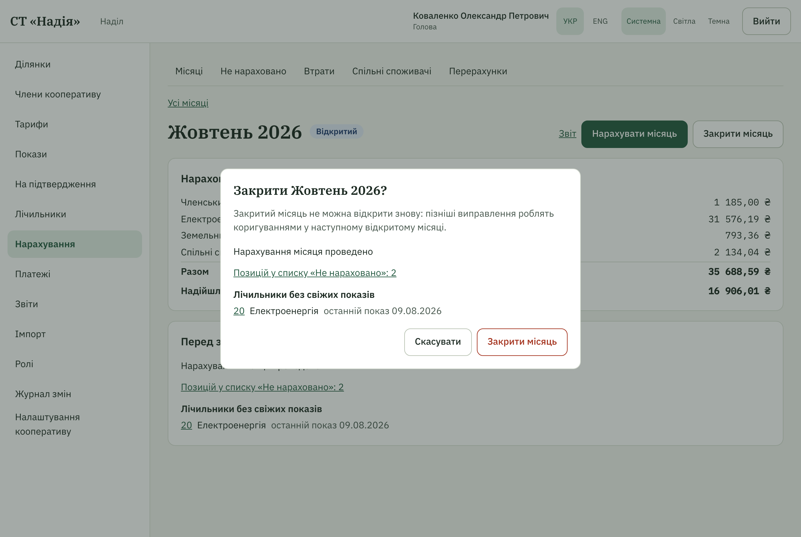
На картці ділянки панель «Рахунок» показує борг за видами та нарахування, нові зверху, з фільтром за датами. «Подробиці» відкривають розрахунок: кВт·год, тариф, покази, дні, відсоток втрат. Нарахування, проведене пізніше за дні, за які воно, має вигляд «за 13.09–28.09, нараховано у жовтні 2026».
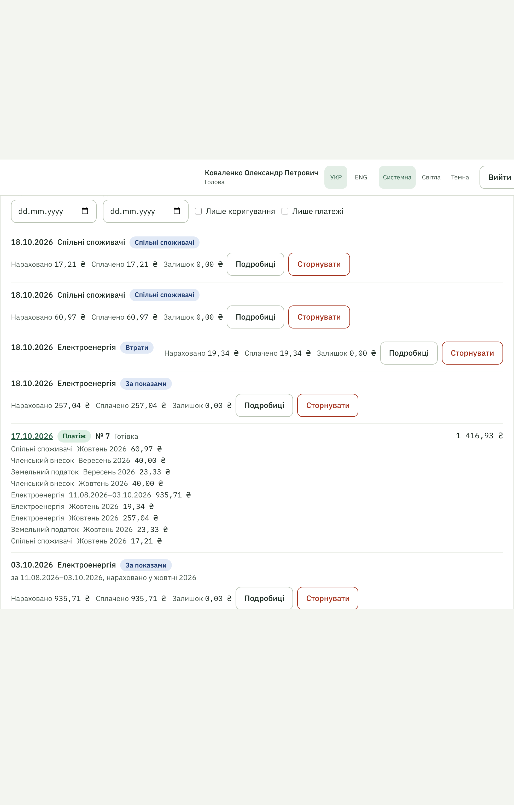
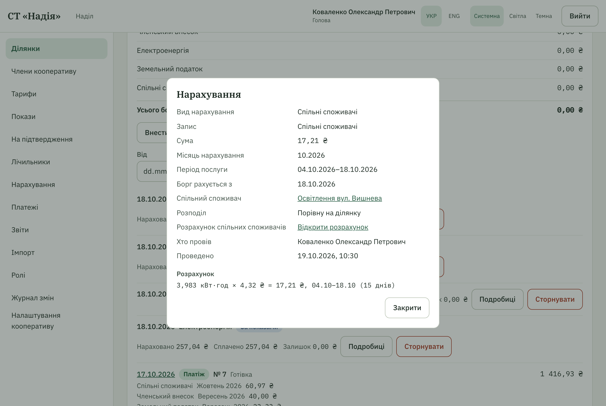
| Колір | Коли |
|---|---|
| Червоний | Борг більший за «червоний від суми» або найстаріший борг старший за «червоний від днів» (строго більше) |
| Жовтий | Будь-який інший борг |
| Зелений | Боргу немає |
| Сірий | Немає власника або спільні землі |
Пороги задаються в «Налаштуваннях кооперативу» (типово 1 000,00 ₴ і 90 днів; демо-кооператив має 2 000,00 ₴ і 90 днів).
Казначей бачить місяці, рахунки та списки, але кнопок не має. Член бачить лише рахунок власних ділянок у «Мої нарахування» (розділ 12), лише для читання, з розрахунком кожного нарахування; суми інших ділянок не показуються ніколи.
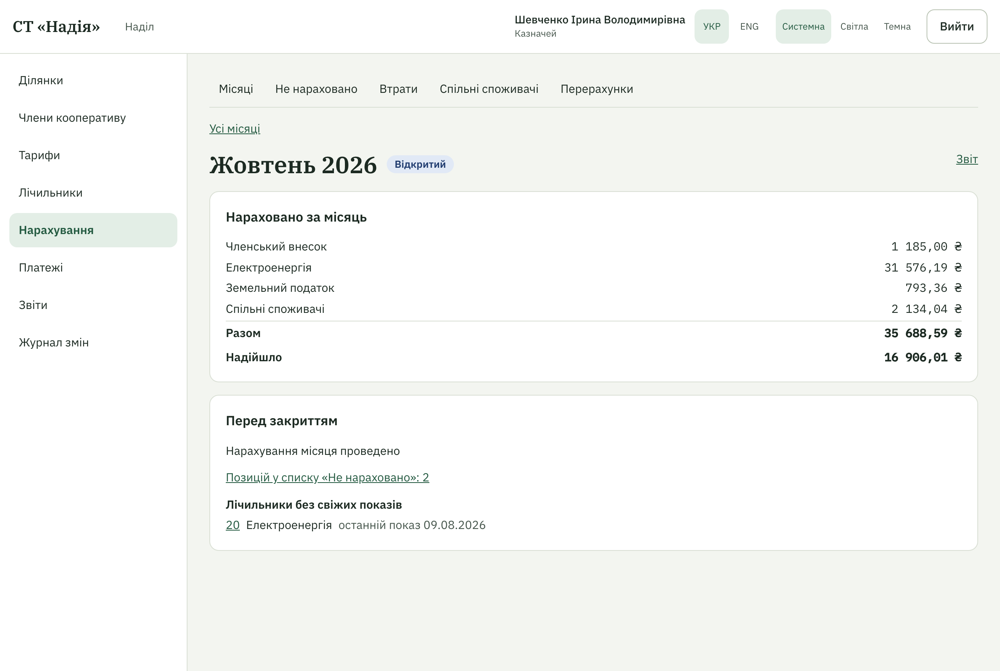
Квартал А: 1 100 кВт·год, під ним ділянки П1 = 600 і П2 = 400 → втрати 100: П1 60 кВт·год (259,20 ₴), П2 40 (172,80 ₴).
Квартал Б: 1 050, ділянка П3 = 1 000 → втрати 50 → П3.
Підстанція: 2 300; діти А 1 100 + Б 1 050 + свердловина 50 = 2 200 → втрати 100 діляться 600 / 400 / 1 000 з 2 000: П1 30, П2 20, П3 50 кВт·год.
Насоси свердловин, вуличне освітлення, контора. Їхнє споживання — окремий вид нарахування «Спільні споживачі» зі своїм тарифом за кВт·год і окремим запуском правління. Спосіб поділу — для кожного споживача:
| Спосіб | Кому | Приклад |
|---|---|---|
| Підключені ділянки | Ділянкам, підключеним до цієї свердловини, за днями підключення | Насос 60 кВт·год, три підключені ділянки: по 20 кВт·год = 86,40 ₴; непідключена — нічого |
| Порівну | Усім активним ділянкам, з лічильником чи без | Освітлення |
| Користувачі послуги | Ділянкам зі списку в налаштуваннях | Освітлення 30 кВт·год, 3 ділянки: по 10 = 43,20 ₴ |
| Не нараховувати | Нікому — входить у членський внесок | Показується у звітах |
Обидві вкладки «Нарахувань» працюють однаково: оберіть діапазон «З» і «По» (не пізніше за сьогодні), натисніть «Переглянути», прочитайте таблицю й попередження, далі «Провести» (дозвіл «Проведення нарахувань»). Проведення потрапляє у місяць дня «По» або в найраніший відкритий місяць після нього. Нижче історія запусків із «Докладніше» та «Сторнувати запуск» (дозвіл «Сторнування нарахувань», причина обов’язкова).
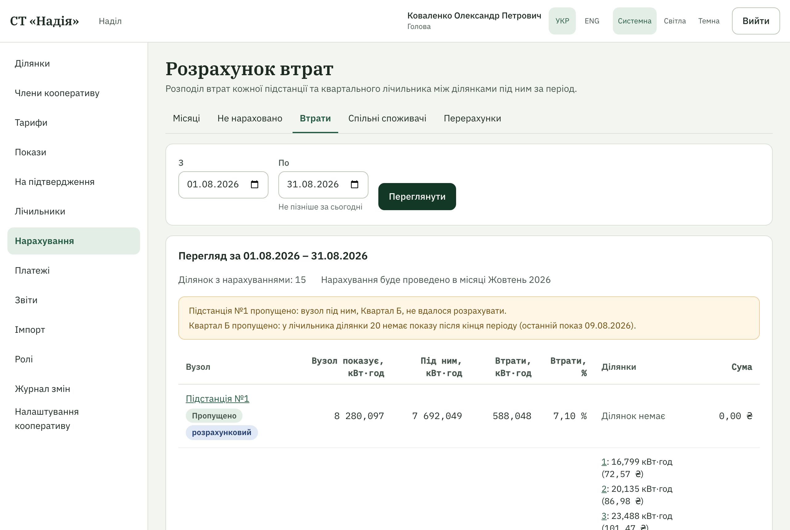
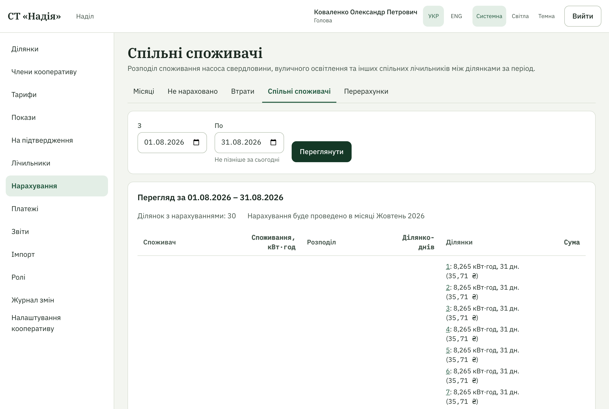
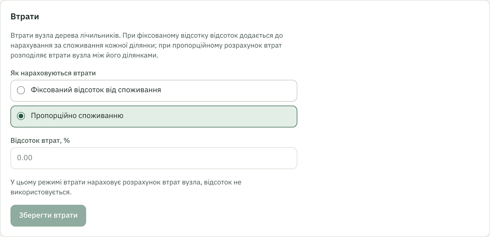
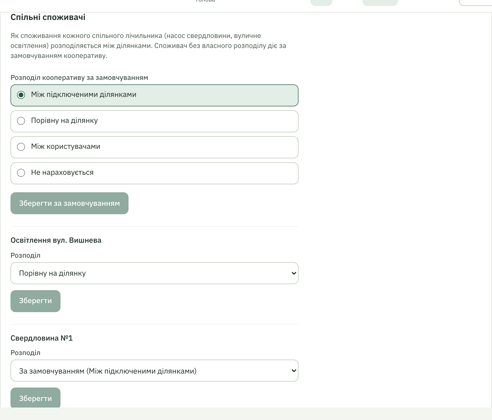
З водою — як зі світлом: не підключена до свердловини ділянка за воду не платить.
Підключення ділянки — на її картці, панель «Вода»: «Підключити» (джерело й перший день підключення) та «Відключити» (останній день підключення); нижче історія. Багато ділянок одразу підключають чи відключають у розділі «Водопостачання» «Налаштувань кооперативу», для кожного джерела. Без підключення ділянка ніколи не потрапляє у «Не нараховано» за воду й нічого за неї не платить.
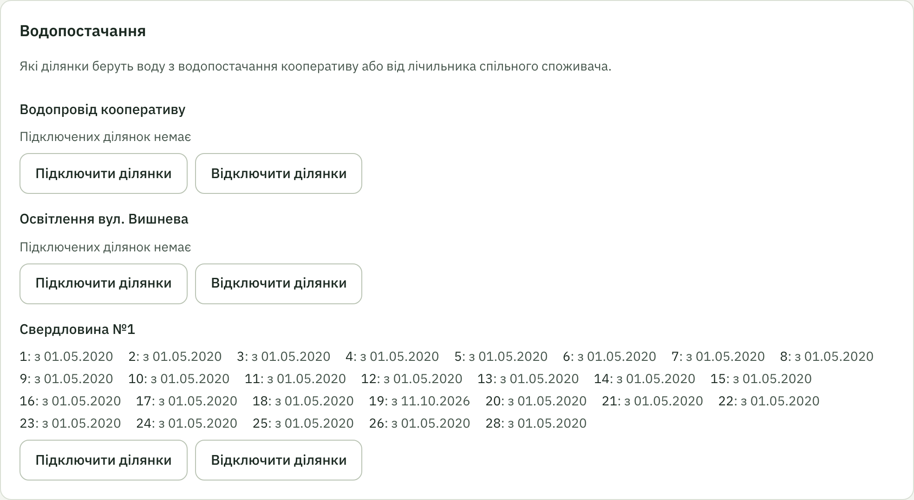
Нова версія тарифу заднім числом, виправлення використаної версії чи використаного показу — один механізм:
Перерахунки — вкладка «Нарахувань» (перегляд — дозвіл «Перегляд нарахувань»). Це журнал: коли, причина (вручну, версія тарифу, показ), хто провів, пояснення, різниця «Разом». «Відкрити» показує перерахунок: охоплення, суми за видами й рядки «було нараховано → має бути → різниця», дію («Сторно і нове нарахування», «Коригування») та створені записи з посиланням на рахунок ділянки. Перерахунок ніколи не змінюється й не скасовується: помилку виправляє наступний перерахунок.
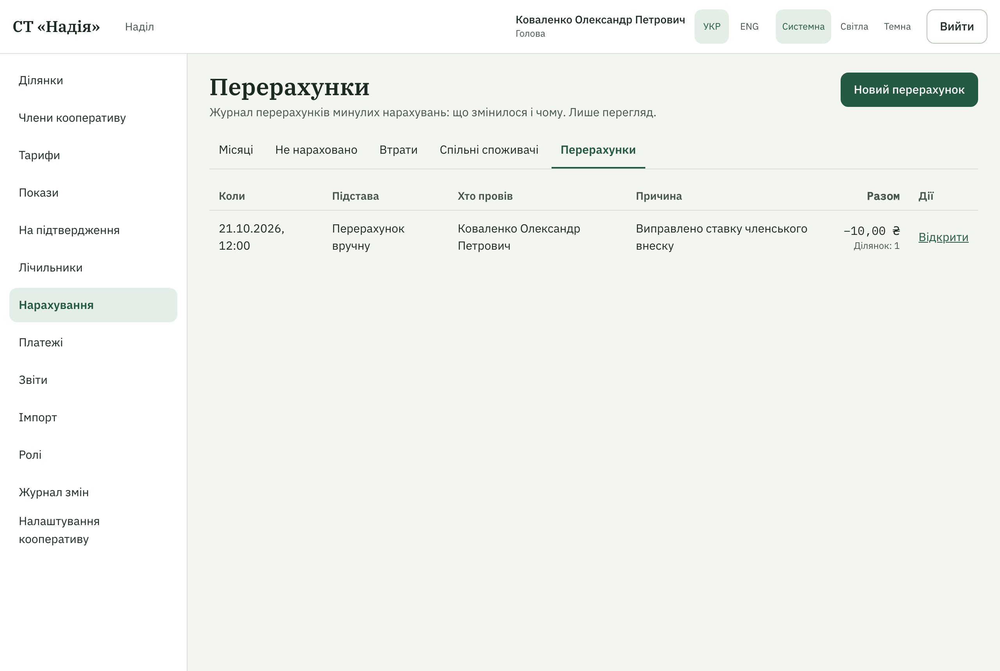
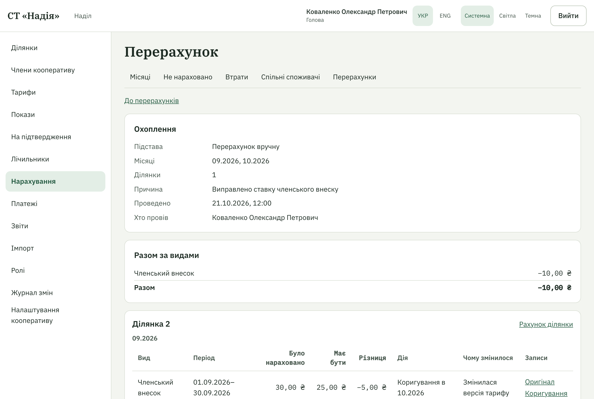
Новий перерахунок (дозвіл «Перерахунок нарахувань», є лише в голови): оберіть місяці «З місяця» і «По місяць» (не пізніше за поточний, не більше 24 місяців), види нарахувань і ділянки («Усі» чи «Обрані»), натисніть «Переглянути». Крок перегляду показує, що зміниться: ділянки, суми за видами, рядки з причинами («Змінилася версія тарифу», «Змінилася площа ділянки»…). Нічого не записується, доки ви не введете причину (обов’язкова, до 500 символів) і не натиснете «Провести перерахунок»; проводиться саме той перегляд, який ви бачили. Якщо тим часом нарахування змінилися, перегляд оновиться і його треба підтвердити ще раз. Коли нарахування вже відповідають даним, перегляд каже «Змін немає» і проводити нічого.
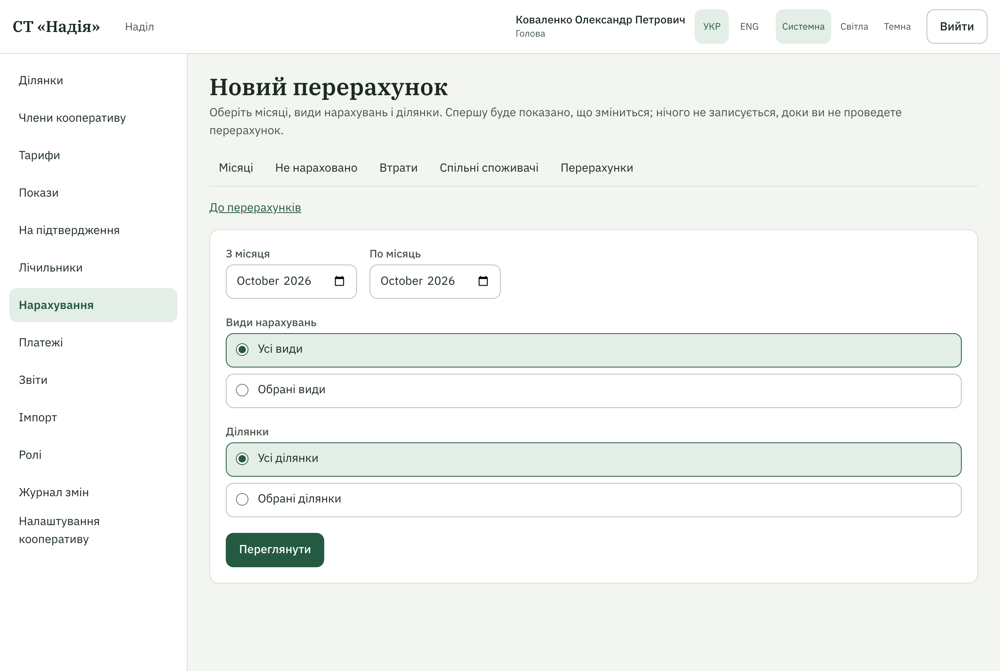
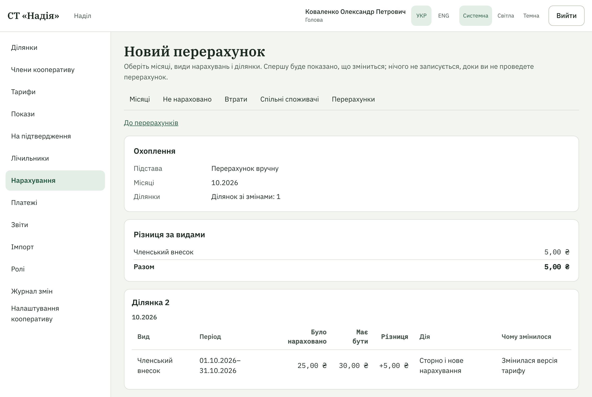
Виправлення використаної версії тарифу — на картці тарифу, «Редагувати» чи «Видалити» версію. Якщо за версією вже є нарахування, замість «версію виправлено» відкривається той самий крок перегляду: зміна версії й перерахунок зберігаються разом або не зберігаються взагалі. Те саме для нової версії заднім числом.
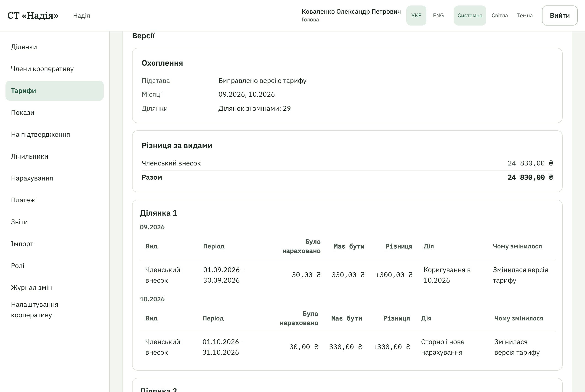
Виправлення нарахованого показу — на картці лічильника, «Виправити» чи «Видалити». Голова бачить крок перегляду («Перерахунок через показ») з причиною; електрик (дозвіл на внесення показів, але без перерахунку) бачить «Показ уже нараховано — зверніться до голови», і нічого не змінюється.
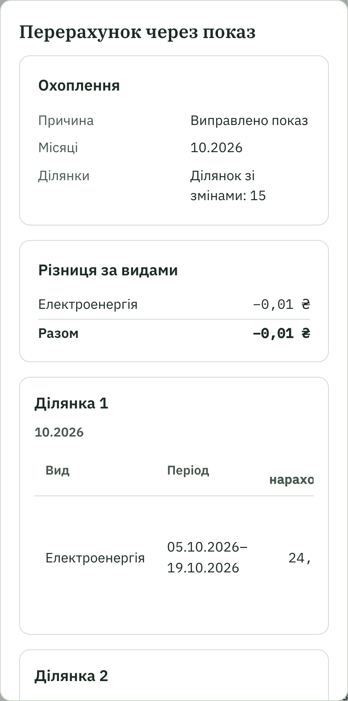
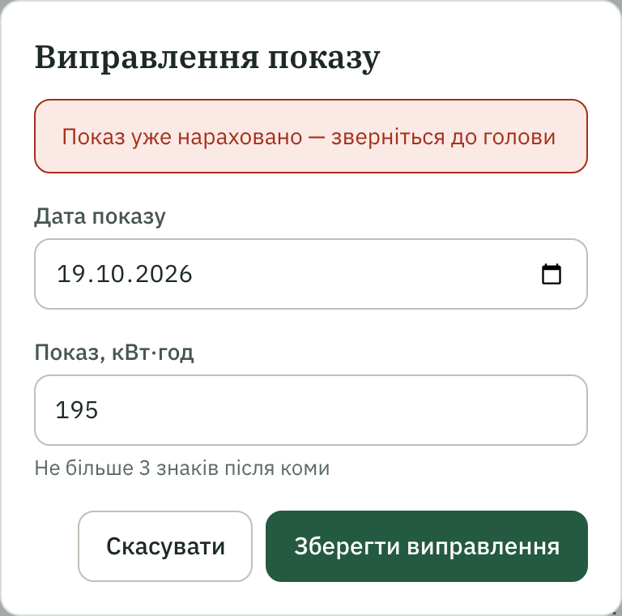
На рахунку ділянки коригування закритого місяця — окремий рядок «Коригування за 09.2026: −5,00 ₴» з причиною, посиланнями «Початкове нарахування» і «Перерахунок» і міткою «Коригування». Прапорець «Лише коригування» залишає тільки такі рядки. Член кооперативу бачить коригування своїх ділянок (причину, але не перерахунок). У демо-даних такий рядок є на ділянці 2.
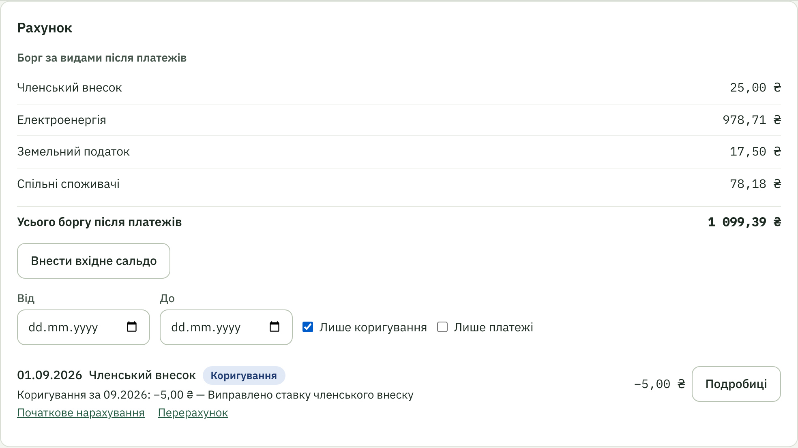
Екрани, які змінюють дані, що впливають на минулі нарахування (площа ділянки, склад тарифу, підключення до води, переміщення лічильника в дереві), нічого не перераховують самі й нагадують: «Минулі нарахування не змінено. За потреби — Нарахування → Перерахунок». Підказку бачить лише той, хто може перераховувати.
З 1 вересня помилково введено 60 ₴/сотка/рік замість 50, ділянка 6 соток. Вересень закритий, жовтень відкритий.
| Було | Після виправлення | |
|---|---|---|
| Вересень (закритий) | 30,00 | Не змінюється; у жовтні коригування −5,00 «за вересень» |
| Жовтень (відкритий) | 30,00 | Сторно −30,00 і нове нарахування 25,00 |
| Разом | 60,00 | 50,00; якщо сплачено 60,00 — передоплата 10,00 |
У «На підтвердження» немає кроку перерахунку. Якщо показ уже затверджено й нараховано, виправте його на картці лічильника — там крок перегляду є.
Звіти збирають в одну таблицю те, що система вже знає: нарахування, платежі, борги, електроенергію, воду, виправлення. Кожен звіт видно на екрані й можна завантажити як файл Excel. Окрім вбудованих звітів, голова може завантажити власну форму Excel (шаблон) — система заповнить її даними кооперативу.
Звіт нічого не рахує «по-своєму»: він лише вибирає, групує й додає вже проведені суми за правилами розділів 14–21 і 23. Тому будь-яку суму зі звіту можна звірити з рахунком ділянки чи екраном «Місяці нарахувань» до копійки. Суми у звітах — це завжди ефективні суми: нарахування плюс коригування мінус сторно.
| Що | Дозвіл | Хто має за замовчуванням |
|---|---|---|
| Відкривати звіти, завантажувати їх, формувати файли за шаблонами | Перегляд звітів | Голова, казначей |
| Звіт «Боржники» (потрібен ще й цей дозвіл) | Перегляд членів | Голова, казначей |
| Звіт «Платежі» (потрібен ще й цей дозвіл; примітку про платника бачить лише той, хто має «Перегляд членів») | Перегляд платежів | Голова, казначей |
| Завантажувати, замінювати, скачувати й архівувати шаблони | Керування шаблонами звітів | Лише голова |
Член кооперативу й електрик пунктів «Звіти» в меню не бачать, а за прямою адресою отримують повідомлення, що доступу немає. Власну роль можна наділити цими дозволами в розділі «Ролі» (розділ 3). Роль із «Перегляд звітів», але без «Перегляд членів» бачить усі звіти, крім «Боржників».
Меню → Звіти. Угорі — картки звітів, які вам доступні, нижче — шаблони. У картці назва звіту й одне речення про нього; клік відкриває звіт.
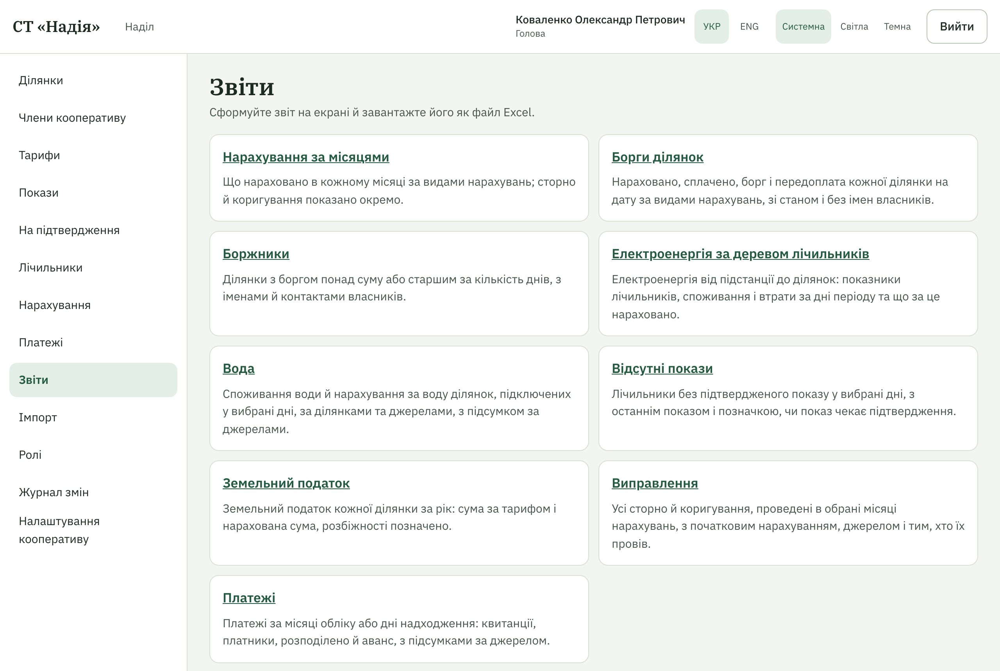
land-tax_2026-01-01_2026-12-31.xlsx.
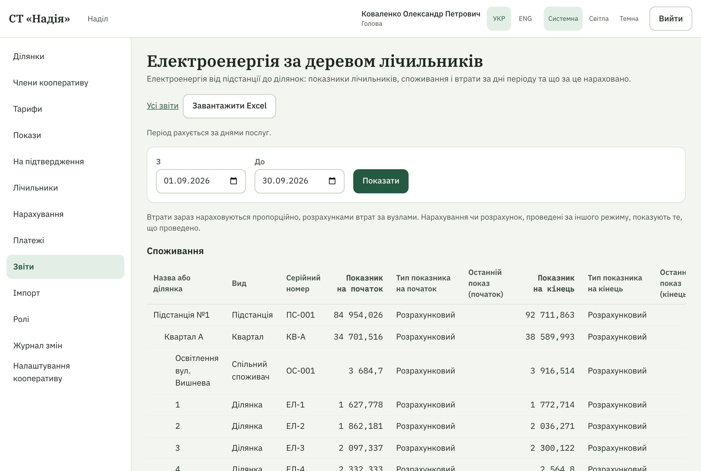
Світло насоса свердловини ділиться між її ділянками як рядок спільного споживача (розділ 20). Цей рядок є на аркуші «Нараховано» звіту про електроенергію і в колонці «Частка насоса свердловини» звіту «Вода». Це та сама сума, показана з двох боків: не додавайте ці два звіти один до одного.
Звіти зручно відкривати з інших екранів: на місяці нарахувань посилання «Звіт» відкриває «Нарахування за місяцями» саме за цей місяць, а на рахунку ділянки є посилання на звіт про борги за вулицею цієї ділянки.
Якщо вам потрібна своя форма (відомість для зборів, звіт до податкової), підготуйте її в Excel як
завжди, а там, де має стояти значення з системи, напишіть поле виду
${назва.поля}. Система замінить поля даними, а ваші формати, об’єднані клітинки, ширини
стовпців і формули збереже. Повний перелік полів — на сторінці «Шаблони звітів», блок
«Поля підстановки»: тип, опис, приклад, пошук і кнопка «Копіювати».
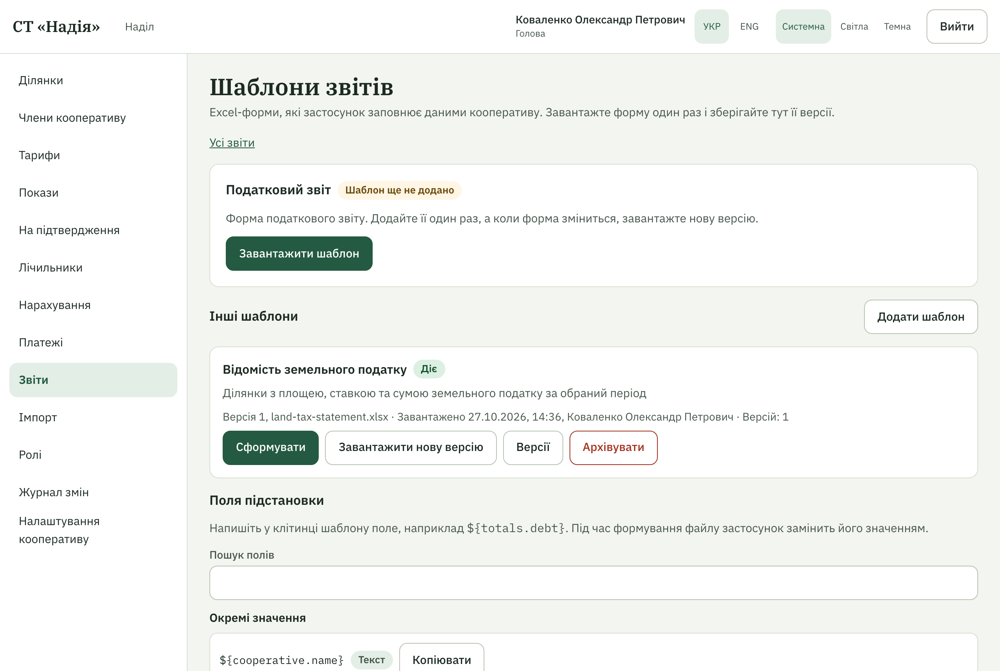
${rows.plots.landTax.expected} і більше нічого)
заповнюється числом чи датою, а не текстом, тож формули над ним працюють. Для дати надайте клітинці
формат дати. Поле всередині тексту («Земельний податок за ${period.year} рік»)
заповнюється текстом в українському форматі чисел і дат.
${cooperative.name},
${cooperative.officialName}, ${cooperative.iban} (реквізити з
налаштувань), ${period.from}, ${period.to},
${period.year} (рік останнього дня періоду), ${totals.debt},
${totals.landTax.expected} та інші підсумки.
rows.plots.* (ділянки), rows.months.* (місяці нарахувань),
rows.meters.* (лічильники електрики) чи rows.water.* (вода) — цей рядок
буде повторено стільки разів, скільки рядків у наборі. Один такий рядок на аркуш;
два набори в одному рядку чи два рядки, що повторюються, на аркуші система відхилить.
Шаблон — таблиця в Excel (ставка 35,00 ₴ за сотку на рік; ділянки 600, 800 і 1000 м²). Те, що ви пишете в шаблоні:
| Клітинка | A | B | C |
|---|---|---|---|
| 1 | ${cooperative.officialName} |
||
| 2 | Земельний податок за ${period.year} рік |
||
| 4 | Ділянка | Площа, м² | Податок за рік, ₴ |
| 5 | ${rows.plots.number} |
${rows.plots.area} |
${rows.plots.landTax.expected} |
| 6 | Разом | =SUM(C5:C5) |
|
Що ви отримаєте за період 01.01–31.12.2026 (рядок 5 повторено для кожної ділянки):
| Ділянка | Площа, м² | Податок за рік, ₴ |
|---|---|---|
| 1 | 600 | 210,00 |
| 2 | 800 | 280,00 |
| 3 | 1000 | 350,00 |
| Разом | 840,00 |
Площа 600 м² — це 6 соток, 6 × 35,00 = 210,00; так само 8 × 35,00 = 280,00 і 10 × 35,00 = 350,00.
Формула =SUM(C5:C5) під повторюваним рядком система перетворила на
=SUM(C5:C7) — вона охоплює всі три копії, тож «Разом» збігається з сумою рядків.
Заголовок у рядку 1 — повна назва кооперативу з реквізитів, у рядку 2 — «Земельний податок за 2026
рік».
.xlsx до 2 МБ. Файли з макросами
(.xlsm), активним вмістом і вбудованими об’єктами, пошкоджені чи «завеликі після
розпакування» відхиляються, і нічого не зберігається. Посилання на інші файли з шаблону прибираються
з попередженням. Діаграми, що посилаються на рядок, який повторюється, не зсуваються (попередження).
У Налаштуваннях є блок «Реквізити» (для змін потрібен дозвіл
«Керування налаштуваннями»): «Повна назва», «Юридична адреса», «Назва банку», «IBAN» і «Код ЄДРПОУ».
IBAN має бути коректним українським (інакше «IBAN некоректний» і нічого не зберігається). Код ЄДРПОУ
тільки читається — «Змінює оператор платформи». Це публічні дані юридичної особи, а не персональні;
зміни записуються в журнал змін. Саме ці дані потрапляють у поля
${cooperative.officialName}, ${cooperative.iban} тощо.
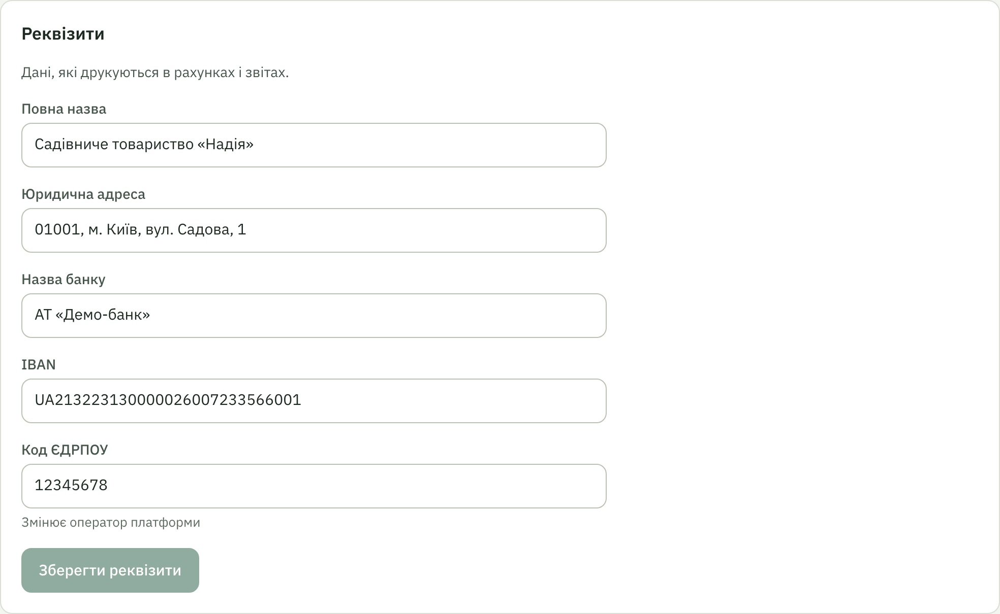
Платіж — рядок у книзі, який нічого не стирає: помилку виправляє сторно, а розподіл на нарахування змінюється лише новими рядками. Як працювати з екранами — розділ 13; тут — правила й приклади.
Порядок видів: членський внесок, електрика, земельний податок.
Борги: членський внесок за січень 600,00, електрика за лютий 250,00. Платіж 700,00. Спершу найстаріший: внесок 600,00, потім електрика 100,00. Залишок електрики 150,00, аванс 0,00. Борг ділянки — 150,00.
Ті самі борги, платіж 1 000,00: внесок 600,00 і електрика 250,00 сплачені повністю, аванс 150,00. Боргу немає, ділянка зелена, хоч аванс є.
Приклад 2, потім проведено земельний податок 120,00. Автозарахування ввімкнено: 120,00 іде з авансу на податок, і аванс стає 30,00. Якби перемикач був вимкнений, податок лишився б боргом 120,00, а аванс — 150,00, доки казначей не натисне «Розподілити аванс».
Борги: внесок за січень 600,00, електрика за лютий 250,00. Платіж 700,00; казначей зараховує лише електрику 250,00. Автозарахування ввімкнено: решту 450,00 одразу зараховано на внесок, залишок внеску 150,00, аванс 0,00.
Той самий випадок, але перемикач вимкнено: електрика 250,00, решта 450,00 лишається авансом, внесок відкритий 600,00. Казначей може натиснути «Розподілити аванс».
Приклад 1 (платіж 700,00: внесок 600,00 і електрика 100,00), потім голова сторнує січневий внесок. Із нього знято 600,00 — це аванс 600,00. Автозарахування переносить 150,00 на відкриту електрику; аванс лишається 450,00, боргу немає.
Член кооперативу має ділянку 7 з боргом 300,00 і ділянку 15 з боргом 100,00 та вносить 200,00. Частини пропорційно боргам: 200 × 300 / 400 = 150,00 для ділянки 7 і 50,00 для ділянки 15. Це два платежі однієї групи; готівка — з одним номером квитанції. Якби вніс 500,00, ділянка 7 отримала б 300,00 і ще 100,00 авансом (надлишок іде на першу ділянку), а ділянка 15 — 100,00.
| Що | Що це дасть правлінню |
|---|---|
| Банк і касова книга | Імпорт банківської виписки з підбором платежів до ділянок; касова книга, здача готівки в банк і звірка; друкований прибутковий касовий ордер. |
| Рахунки й доставка | PDF-рахунки з QR-кодом НБУ, довідка про відсутність боргу, розсилка поштою, Telegram, Viber. |
| Мобільний застосунок і карта | Застосунок для членів і електрика з фото показів; карта кооперативу з кольорами боргу. |
Посібник оновлюється разом із кожною новою можливістю системи.